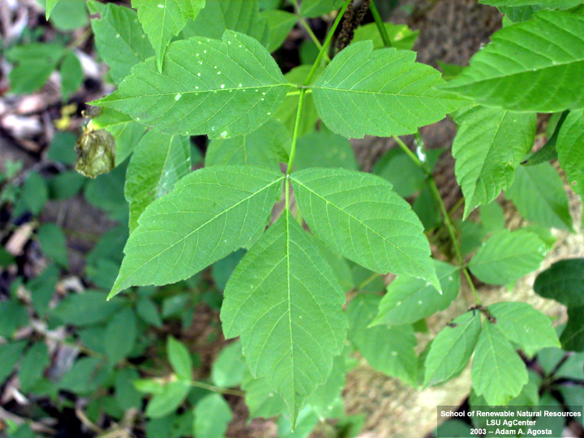
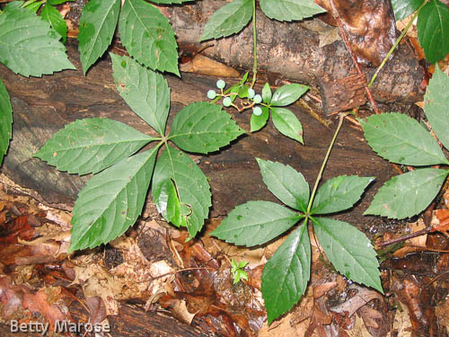
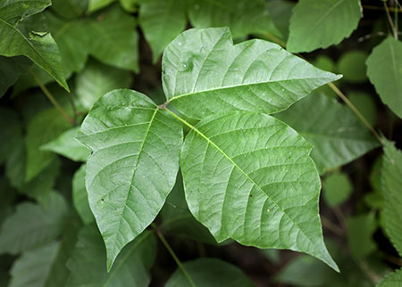

Poison Ivy contains an oil called urushiol that often causes the skin to have allergic reactions. If the oil makes contact with skin, it can lead to an itchy, blistering rash. Although the rash does not spread, it is very irritating and painful.
Dead poison ivy plants can also contain the oil so stay clear of those.
If any of your belongings touch poison ivy, there is a chance the oil is still on the object so make sure you make no direct contact with the object.
How to identify if a plant is poison ivy?
1. Poison ivy has leaves that grow in groups of three.
2. Poison ivy leaves are pointed at the tip.
3. Poison ivy is usually green in the spring and reddish-orange in the fall.
4. Poison ivy grows as both a vine and as a shrub.
5. Poison ivy flowers with small clusters of white berries in the spring that last throughout the winter.
Poison ivy can be found in almost every state of the US. They can grow in woods, fields, city parks, and gardens. They exist in both wet and dry climates.
What to do if you come in contact with poison ivy:
Wash the area affected immediately with and soap. (Using a compress also helps)
Cold water helps sooth the irritation
If you do not have water, then rubbing alcohol will also work.
Do not touch other people or objects because the oil will spread.
If possible, remove contaminated clothing.
Avoid itching the affected area.
Natural Remedies to treat poison ivy:
3 teaspoons of baking soda with one teaspoon of water, mix until it forms a
1. What is the first thing you should do if you touch poison ivy?
a) Wash your hands with cold water. b) Rub the area affected with your hands to get the oil off. c) Try wiping the area with a piece of your clothing.
2. Which plant is poison ivy?
a) 
b) 
c) 
3. If you are not immune to poison ivy and you come in contact with it, what will you most likely not see or feel after a while?
a) a blue scar b) irritation and pain c) a red rash
4. What should you do if any of your belongings or clothing touches poison ivy?
a) Nothing because your skin didn't come in contact with the leaves. b) Remove and get rid of the stuff/ wash them with a glove on. c) Wash them using your hands.
5. Are you likely to find poison ivy in the US?
a) No it is industrialized. b) Yes you'll find it in most of the US c) idk